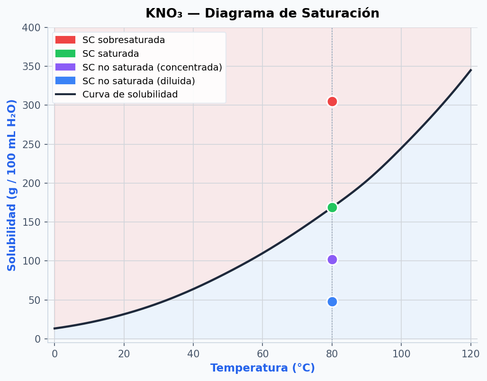
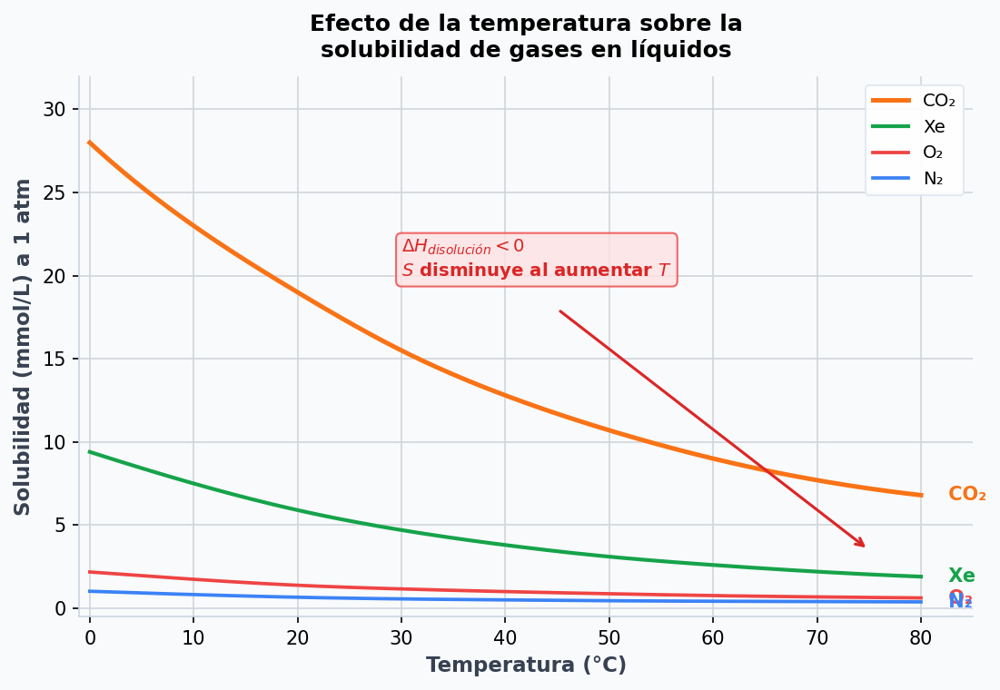
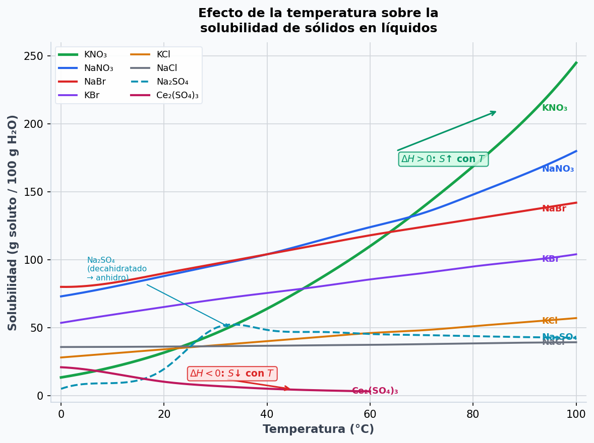
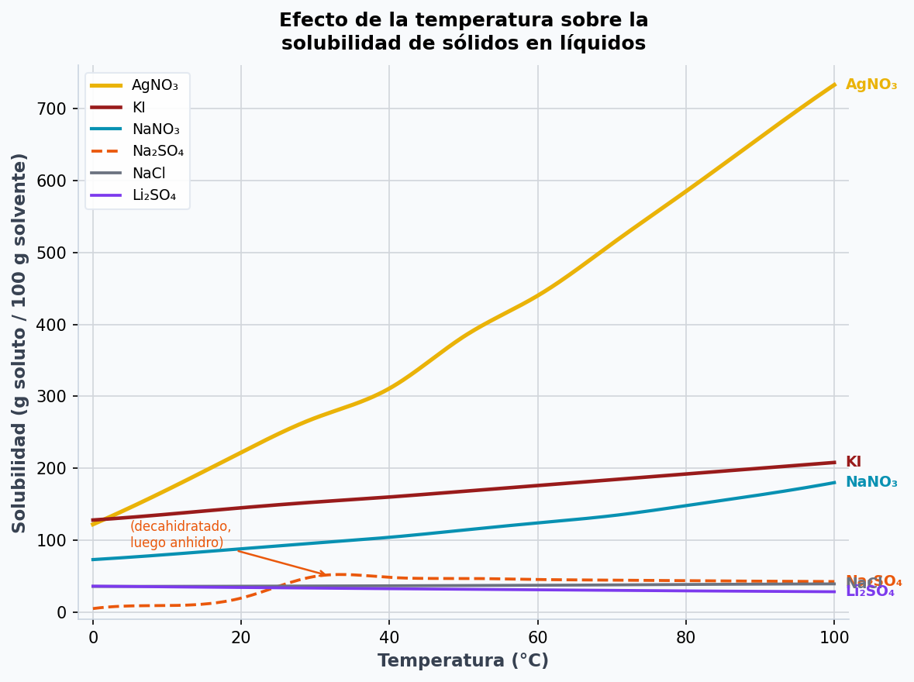

1
Conceptos Generales de Soluciones
📘
Desarrollo ConceptualSolución: Sistema homogéneo constituido por dos o más sustancias cuya composición puede variar continuamente dentro de ciertos límites. El soluto es el componente en menor proporción; el solvente, el de mayor proporción.
| Solvente | Soluto | Ejemplo |
|---|---|---|
| Gas | Gas | Aire (N₂, O₂, Ar…) |
| Líquido | Gas | CO₂ en gaseosas |
| Líquido | Líquido | Etanol en agua |
| Líquido | Sólido | Azúcar o NaCl en agua |
| Sólido | Gas | H₂ en paladio |
| Sólido | Líquido | Amalgamas (Hg en metales) |
| Sólido | Sólido | Aleaciones (bronce, acero) |
| Tipo | Descripción |
|---|---|
| No saturada (diluida/concentrada) | Puede disolver más soluto |
| Saturada | En equilibrio con el sólido; no puede disolver más |
| Sobresaturada | Más soluto disuelto que la saturada — estado inestable |
Ejemplo: Solubilidad del NaCl = 36,0 g / 100 mL H₂O. Con 30 g → no saturada; 36 g → saturada; 40 g disueltos → sobresaturada (metaestable).
🔬
Applets Interactivos🧪 Simulador de saturación — NaCl en agua
Agregá NaCl con el slider y observá cómo cambia el estado de la solución. Solubilidad del NaCl = 36 g / 100 mL.
—
🎯 Clasificá la solución
Se muestra un escenario. Elegí si la solución es no saturada, saturada o sobresaturada. (Solubilidad NaCl = 36 g/100 mL)
Pregunta 1 / 5
▶
Video de la Clase❓
Guía de Estudio — Preguntas1
Definí qué es una solución y explicá por qué se la considera un sistema homogéneo.
2
¿Qué criterio se usa para distinguir el soluto del solvente? ¿Existe algún caso donde esta distinción sea ambigua?
3
Completá la tabla con un ejemplo concreto para cada combinación de estados físicos (Gas–Gas, Líquido–Gas, Líquido–Líquido, Líquido–Sólido, Sólido–Gas, Sólido–Líquido, Sólido–Sólido).
4
Explicá la diferencia entre una solución diluida y una concentrada. ¿Son estos términos absolutos o relativos? Justificá.
5
Definí solución saturada, no saturada y sobresaturada. ¿Por qué la sobresaturada no es un estado estable?
6
Con solubilidad NaCl = 36,0 g/100 mL, clasificá: a) 30,0 g/100 mL, b) 36,0 g/100 mL, c) 40,0 g/100 mL sin cuerpo de fondo, d) 40,0 g/100 mL con cuerpo de fondo.
7
¿Qué diferencia hay entre las unidades de concentración físicas y las químicas? Mencioná al menos dos ejemplos de cada tipo.
2
Interacciones Intermoleculares y Formación de Soluciones
📘
Desarrollo ConceptualPrincipio fundamental: Una solución se forma cuando las interacciones soluto–solvente son comparables a las soluto–soluto y solvente–solvente. Regla: "Lo similar disuelve lo similar".
| Interacción | Energía típica | Ejemplo |
|---|---|---|
| Ión–dipolo | 40–600 kJ/mol | NaCl en agua |
| Puente de H | 10–40 kJ/mol | Etanol en agua |
| Dipolo–dipolo | 3–25 kJ/mol | Acetona en CHCl₃ |
| Ión–dipolo inducido | ~2–10 kJ/mol | Cl⁻ en hexano |
| Dipolo–dipolo inducido | ~1–5 kJ/mol | Acetona en hexano |
| Dispersión (London) | 0,05–40 kJ/mol | Octano en hexano |
🔬
Applets Interactivos🧲 Predictor de miscibilidad
Seleccioná dos sustancias y observá si se mezclan. Se muestra el tipo de interacción predominante.
⚡ Jerarquía de interacciones
Hacé clic en cada interacción para ver un ejemplo y su energía relativa.
Hacé clic en una barra del gráfico.
▶
Video de la Clase❓
Guía de Estudio — Preguntas1
Enunciá la regla "lo similar disuelve lo similar" y explicá su fundamento a nivel molecular.
2
¿Por qué el etanol es completamente miscible en agua, pero el hexano no lo es? Relacioná con las interacciones intermoleculares involucradas.
3
Explicá por qué el azufre se disuelve en CS₂ pero no en agua. ¿Qué tipo de interacciones predominan en cada caso?
4
Para que una solución se forme espontáneamente, ¿qué relación debe existir entre las tres clases de interacciones intermoleculares?
5
Identificá el tipo de interacción predominante en: a) NaCl en agua, b) CH₃OH en agua, c) CH₃OH en CHCl₃, d) Cl⁻ en hexano, e) Acetona en hexano, f) Octano en hexano.
6
¿Por qué las interacciones ión–dipolo son generalmente más fuertes que las dipolo–dipolo? ¿Cómo influye esto en la solubilidad de sales iónicas en agua?
7
Predecí miscibilidad y justificá: a) Aceite vegetal y agua, b) Etanol y acetona, c) CCl₄ y hexano, d) KBr y agua.
3
Termodinámica del Proceso de Disolución
📘
Desarrollo Matemático y ConceptualEcuación de Gibbs:
\[\Delta G_{\text{disolución}} = \Delta H_{\text{disolución}} - T\,\Delta S_{\text{disolución}}\]
Espontánea si \(\Delta G < 0\). Siempre: \(\Delta S > 0\) (favorece la disolución).
①
Separación del soluto\(\Delta H_1 > 0\) — endotérmico
Se rompen fuerzas soluto–soluto
②
Separación del solvente\(\Delta H_2 > 0\) — endotérmico
Se crean huecos en el solvente
③
Solvatación\(\Delta H_3 < 0\) — exotérmico
Interacciones soluto–solvente
Entalpía global y ciclo de Born-Haber:
\[\Delta H_{\text{soln}} = \Delta H_1 + \Delta H_2 + \Delta H_3\]
\[\Delta H_{\text{soln}} = \Delta H_{\text{reticular}} + \Delta H_{\text{hidratación}}\]
🔀 El factor entrópico — ΔS en la disolución
¿Por qué ΔS > 0 en la mayoría de las disoluciones?
Al disolverse, las partículas del soluto pasan de un estado ordenado (cristal o líquido puro) a distribuirse aleatoriamente entre las moléculas del solvente. El número de microestados posibles del sistema aumenta enormemente, lo que eleva la entropía.
Al disolverse, las partículas del soluto pasan de un estado ordenado (cristal o líquido puro) a distribuirse aleatoriamente entre las moléculas del solvente. El número de microestados posibles del sistema aumenta enormemente, lo que eleva la entropía.
Descomposición de ΔS de disolución:
\[\Delta S_{\text{soln}} = \Delta S_{\text{mezcla}} + \Delta S_{\text{estructural}}\]
\(\Delta S_{\text{mezcla}} > 0\) siempre — al mezclar, el número de microestados accesibles crece.
\(\Delta S_{\text{estructural}}\) puede ser \(< 0\) — si el solvente se ordena alrededor del soluto (ej. capa de hidratación iónica fuerte como en Li⁺).
| Sistema | ΔS_soln (J/mol·K) | Comentario |
|---|---|---|
| NaCl en H₂O | +43 | Iones pequeños con hidratación moderada |
| KCl en H₂O | +76 | Iones más grandes, menor hidratación estructural |
| NH₄NO₃ en H₂O | +108 | Iones grandes, poca ordenación del solvente |
| LiF en H₂O | −37 | Li⁺ muy pequeño y cargado → ordena mucho el agua |
| Gas (O₂) en H₂O | −110 | El gas pasa de alta libertad a estado más ordenado |
Contribución de −TΔS a la espontaneidad:
Como \(\Delta S_{\text{soln}} > 0\) en la mayoría de los casos, el término \(-T\Delta S < 0\), lo que hace que \(\Delta G\) sea más negativo.
A temperaturas más altas, este término se vuelve más importante y puede compensar un ΔH positivo (endotérmico), haciendo la disolución espontánea.
Como \(\Delta S_{\text{soln}} > 0\) en la mayoría de los casos, el término \(-T\Delta S < 0\), lo que hace que \(\Delta G\) sea más negativo.
A temperaturas más altas, este término se vuelve más importante y puede compensar un ΔH positivo (endotérmico), haciendo la disolución espontánea.
\[-T\Delta S = -(298\,\text{K})(80\,\text{J/mol·K}) = -23{,}8\,\text{kJ/mol}\]
Ejemplo típico: un ΔS de 80 J/mol·K a 298 K contribuye −23,8 kJ/mol al ΔG.
🔬
Applets Interactivos⚗️ Calculadora ΔG = ΔH − TΔS
Ajustá ΔH, ΔS y la temperatura T. El gráfico de barras descompone la contribución de cada término a ΔG.
📊 Diagrama energético de las 3 etapas
Modificá la energía de cada etapa. El diagrama muestra si ΔH_soln es positivo (endotérmico) o negativo (exotérmico).
🔀 Visualizador de entropía — orden → desorden
Observá cómo las partículas pasan de un estado ordenado (cristal + solvente puro) a un estado desordenado (solución). Ajustá ΔS y T para ver la contribución −TΔS al ΔG.
▶
Video de la Clase❓
Guía de Estudio — Preguntas y ProblemasPreguntas conceptuales
1
Escribí la ecuación de Gibbs e identificá cada término. ¿Cuál es la condición para que la disolución sea espontánea?
2
Explicá por qué ΔS generalmente favorece la disolución. ¿En qué situaciones podría no ser así?
3
Describí las tres etapas del modelo energético de disolución, indicando si cada una es endotérmica o exotérmica.
4
¿De qué depende que ΔH_soln sea positivo o negativo? Explicalo en términos de las magnitudes relativas de las tres etapas.
5
La disolución de NH₄NO₃ en agua es endotérmica y sin embargo ocurre espontáneamente. ¿Cómo es posible? ¿Qué factor termodinámico compensa?
6
Si al disolver LiCl la temperatura aumenta, ¿qué signo tiene ΔH? ¿Y si la temperatura disminuye?
7
¿Qué es la energía reticular? ¿Cómo se relaciona con la solubilidad a través del ciclo de Born-Haber?
Problemas
P1
Para un sólido iónico hipotético: energía reticular = 800 kJ/mol, ΔH_hidratación = −780 kJ/mol. ¿Signo de ΔH_soln? ¿Esperarías que la disolución sea espontánea?
P2
La sal A enfría la solución y la sal B la calienta. ¿Cuál tiene ΔH > 0? Si ambas se disuelven espontáneamente, ¿qué concluís sobre ΔS y ΔG en cada caso?
4
Solubilidad y Efecto de la Temperatura
📘
Desarrollo ConceptualSolubilidad: máxima cantidad de soluto que puede disolverse en una cantidad dada de solvente a una temperatura determinada. Corresponde a la concentración de la solución saturada a esa temperatura.
Efecto de T según Le Chatelier:
Si \(\Delta H_{\text{soln}} > 0\): solubilidad ↑ con T |
Si \(\Delta H_{\text{soln}} < 0\): solubilidad ↓ con TPara gases en líquidos: siempre \(\Delta H < 0\) → solubilidad ↓ al calentar.
Masa que cristaliza al enfriar de T₁ a T₂:
\[m_{\text{cristaliza}} = m_{\text{disuelto}} - S(T_2) \times \frac{V_{\text{solvente}}}{100\,\text{mL}}\]
🔬
Applets Interactivos🔴🟢 Diagrama de saturación — KNO₃ (generado con Python / matplotlib)
El gráfico muestra la curva de solubilidad del KNO₃ y cuatro puntos de referencia que ilustran los distintos estados de saturación a 80°C.

● SC sobresaturada — punto sobre la curva (inestable)
● SC saturada — punto sobre la curva (equilibrio)
● SC no saturada (concentrada) — debajo de la curva
● SC no saturada (diluida) — debajo de la curva
📈 Curvas de solubilidad interactivas
Usá el slider de temperatura para leer la solubilidad de cada compuesto. Activá/desactivá compuestos con los botones.
❄️ Calculadora de cristalización
¿Cuánto soluto precipita al enfriar? Completá los datos y calculá.
🌡️ Gases en agua vs temperatura (Python / matplotlib)
Todos los gases son menos solubles al aumentar la temperatura (ΔH < 0). El CO₂ es ~50× más soluble que el N₂ a igual presión parcial.

ΔHdisolución < 0 para todos los gases → la solubilidad disminuye al aumentar T. Por eso las bebidas calientes pierden carbonatación y los lagos calientes tienen menos O₂ disponible.
📊
Curvas de solubilidad — sólidos en agua (Python / matplotlib)📈 Compuestos con ΔH > 0 y ΔH < 0
Diferentes compuestos responden de forma opuesta al aumento de temperatura, según el signo de su entalpía de disolución.

↑ ΔH > 0: KNO₃, NaNO₃, NaBr, KBr, KCl
Solubilidad aumenta con T
Solubilidad aumenta con T
↓ ΔH < 0: Ce₂(SO₄)₃, Li₂SO₄
Solubilidad disminuye con T
Solubilidad disminuye con T
📈 Compuestos con comportamientos especiales
El Na₂SO₄ tiene un máximo a ~32°C (transición decahidratado→anhidro). El Li₂SO₄ tiene ΔH < 0. AgNO₃ aumenta muy fuertemente.

⚠️ Na₂SO₄: La transición de decahidratado (Na₂SO₄·10H₂O) a anhidro (Na₂SO₄) alrededor de 32°C invierte la tendencia de solubilidad — caso típico de pregunta de examen.
▶
Video de la Clase❓
Guía de Estudio — Preguntas y ProblemasPreguntas conceptuales
1
Definí solubilidad. ¿A qué tipo de solución corresponde su valor a una temperatura dada?
2
En una curva de solubilidad (S vs. T), explicá qué representan: un punto sobre la curva, por debajo, y por encima.
3
¿Qué compuestos ven aumentada su solubilidad con T? ¿Qué signo tiene su ΔH? ¿Existe algún compuesto con comportamiento opuesto?
4
El Na₂SO₄ presenta un cambio brusco de pendiente alrededor de 32°C. ¿A qué se debe? (pista: transición entre la forma decahidratada y la anhidra).
5
Explicá por qué la solubilidad de los gases disminuye al aumentar T. ¿Qué signo tiene ΔH de disolución para gases?
6
¿Por qué un lago de agua caliente tiene menos oxígeno disuelto que uno frío? ¿Qué consecuencias tiene para los organismos acuáticos?
Problemas
P1
A 80°C, S(KNO₃) ≈ 170 g/100 mL. Tenés 100 g de KNO₃ en 100 mL a 80°C. a) ¿La solución es saturada, no saturada o sobresaturada? b) Al enfriar a 30°C (S ≈ 45 g/100 mL), ¿cuántos gramos cristalizan?
P2
Tenés 200 mL de agua a 60°C saturada con NaNO₃ (S ≈ 125 g/100 mL). ¿Cuántos gramos contiene? Al enfriar a 20°C (S ≈ 88 g/100 mL), ¿cuántos gramos precipitan?
5
Efecto de la Presión y Ley de Henry
📘
Desarrollo Matemático y ConceptualLey de Henry: La solubilidad de un gas en un líquido a temperatura constante es directamente proporcional a la presión parcial del gas sobre la solución.
Ley de Henry:
\[S = k_H \cdot P\]
\(S\) = solubilidad (M) · \(k_H\) = constante de Henry (M/mmHg) · \(P\) = presión parcial (mmHg)
| Gas | k_H a 25°C (M/mmHg) | Solubilidad relativa |
|---|---|---|
| N₂ | 8,42 × 10⁻⁷ | Baja |
| O₂ | 1,66 × 10⁻⁶ | Baja–media |
| CO₂ | 4,48 × 10⁻⁵ | Alta (≈50× más que O₂) |
Enfermedad de descompresión: A 30 m, la presión total es ~4 atm → mayor solubilidad de N₂ en sangre. Si el buzo sube rápido, el N₂ no se elimina gradualmente y forma burbujas en tejidos y vasos sanguíneos, causando dolor severo.
🔬
Applets Interactivos🔢 Calculadora — Ley de Henry
Seleccioná un gas y variá la presión parcial. Se calcula S = k_H · P y se compara la solubilidad de los tres gases.
🤿 Simulador del buzo — N₂ en sangre
Variá la profundidad y observá cómo cambia la presión, la solubilidad del N₂ en sangre y el riesgo de descompresión.
▶
Video de la Clase❓
Guía de Estudio — Preguntas y ProblemasPreguntas conceptuales
1
¿Sobre qué tipo de soluciones tiene efecto significativo la presión: sólidos en líquidos, líquidos en líquidos, o gases en líquidos? Justificá.
2
Explicá usando el modelo molecular por qué al aumentar la presión de un gas sobre un líquido aumenta la cantidad de gas disuelto.
3
Enunciá la Ley de Henry e identificá cada variable y sus unidades.
4
¿Qué significado físico tiene k_H? ¿Qué indica un valor alto de k_H respecto de la solubilidad de ese gas?
5
Con k_H(N₂)=8,42×10⁻⁷, k_H(O₂)=1,66×10⁻⁶, k_H(CO₂)=4,48×10⁻⁵ M/mmHg: ¿cuál es más soluble a igual presión parcial? ¿A qué se debe la diferencia?
6
Explicá qué ocurre a nivel molecular cuando abrís una botella de gaseosa. ¿Por qué se forman burbujas? Relacioná con la Ley de Henry.
7
¿En qué situaciones no se cumple la Ley de Henry? Mencioná al menos dos limitaciones.
Problemas
P1
Calculá la solubilidad del O₂ en agua a 25°C con P(O₂) = 159 mmHg. Usá k_H(O₂) = 1,66×10⁻⁶ M/mmHg.
P2
Una gaseosa se embotella con CO₂ a 4,0 atm (3040 mmHg). k_H(CO₂) = 4,48×10⁻⁵ M/mmHg. a) [CO₂] en botella cerrada; b) al abrir, P_CO₂ baja a 0,3 mmHg, ¿cuál es la nueva [CO₂]? c) ¿Por qué hay burbujeo?
P3
A 30 m de profundidad (P_total ≈ 4 atm), P(N₂) ≈ 2356 mmHg. Calculá la solubilidad de N₂ en sangre y comparala con la superficie (P_N₂ ≈ 593 mmHg). ¿Por qué la descompresión rápida es peligrosa?